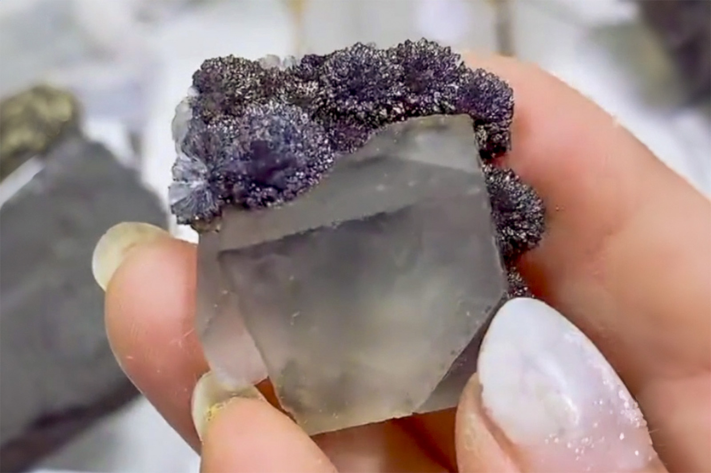

Acicular Marcasite Balls on Fluorite
"Marcasite on Fluorite"
II-09060
Qinglong Mine (Dachang Mine), Dachang Sb ore field, Qinglong County, Qianxinan, Guizhou, China
Purchased 1/4/2026 from 7 Minerals Mine for $25.00
Core Collection • In Collection
Details
Storage Type: Flat
Storage Location: 000 Unassigned
Size class: TBD (0)
Dimensions: Unrecorded
Mass: 20.32 g
Luster: Average, Sub-Metallic